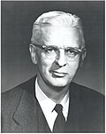
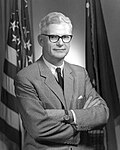

| Formation | 1964 |
|---|---|
| Type | NGO |
| Location |
|
Parent organization | National Academies of Sciences, Engineering, and Medicine |
| Website | nae |
The National Academy of Engineering (NAE) is an American nonprofit, non-governmental organization. It is part of the National Academies of Sciences, Engineering, and Medicine (NASEM), along with the National Academy of Sciences (NAS) and the National Academy of Medicine (NAM).
The NAE operates engineering programs aimed at meeting national needs, encourages education and research, and recognizes the superior achievements of engineers. New members are annually elected by current members, based on their distinguished and continuing achievements in original research. The NAE is autonomous in its administration and in the selection of its members, sharing with the rest of the National Academies the role of advising the federal government.
The National Academy of Sciences was created by an Act of Incorporation dated March 3, 1863, which was signed by then president of the United States Abraham Lincoln with the purpose to "...investigate, examine, experiment, and report upon any subject of science or art..."[1] No reference to engineering was in the original act, the first recognition of any engineering role was with the setup of the Academy's standing committees in 1899.[1] At that time, there were six standing committees: mathematics and astronomy; physics and engineering; chemistry; geology and paleontology; biology; and anthropology.[1] In 1911, this committee structure was again reorganized into eight committees: biology was separated into botany; zoology and animal morphology; and physiology and pathology; anthropology was renamed anthropology and psychology with the remaining committees including physics and engineering, unchanged.[1]
In 1913, George Ellery Hale presented a paper on the occasion of the Academy's 50th anniversary, outlining an expansive future agenda for the Academy.[1] Hale proposed a vision of an Academy that interacted with the "whole range of science", one that actively supported newly recognized disciplines, industrial sciences and the humanities.[1][2] The proposed creation of sections of medicine and engineering was protested by one member because those professions were "mainly followed for pecuniary gain".[1] Hale's suggestions were not accepted.[1] Nonetheless, in 1915, the Section of Physics and Engineering was recommended to be changed to physics only, and a year later the Academy began planning a separate section of engineering.[1]
The Academy was requested to investigate the great slide in Culebra Cut late in 1913 which ultimately delayed the opening of the Panama Canal by ten months. The study group, commissioned by the United States Army Corps of Engineers and although composed of both engineers and geologists resulted in a final report prepared by two geologists Charles Whitman Cross and Harry Fielding Reid.[1] The report, submitted to President Wilson in November 1917, concluded that claims of repeated interruptions in canal traffic for years to come were unjustified.[1]
During this time, the United States confronted the prospect of war with Germany and the question of preparedness was raised. Engineering societies responded to this crisis by offering technical services to the Federal government such as the Naval Consulting Board of 1915 and the Council of National Defense of 1916. On June 19 of that year, then US President Woodrow Wilson requested the National Academy of Sciences to organize a "National Research Council" albeit with the assistance of the Engineering Foundation.[1]: 569 The purpose of the Council (at first called the National Research Foundation) was in part to foster and encourage "the increased use of scientific research in the development of American industries... the employment of scientific methods in strengthening the national defense... and such other applications of science as will promote the national security and welfare."[1]
During the period of national preparations, an increasing number of engineers were being elected to the physics and engineering section of the Academy, this did not, however, resolve the long-standing issue of where to place applied sciences such as engineering in the Academy.[1] In 1863, the founding members who were prominent military and naval engineers comprised almost a fifth of the membership.[1] During the latter part of the 19th century, this engineering membership steadily declined and by 1912, Henry Larcom Abbot, who had been elected in 1872, was the sole remaining representative of the Corps of Engineers.[1] With the Engineering Division in the wartime National Research Council being used as a precedent, the Academy established its first engineering section with nine members in 1919 with civil war veteran Henry Larcom Abbot as its first chairman.[1] Of those nine members, only two were new members, the others had transferred from existing sections; "... of the 164 members of the Academy that year, only seven chose to identify themselves as engineers."[3]
During this period of 1915–1916 activity by engineering societies, the National Academy of Sciences complained that there was a lack of scientists and the predominance of engineers on the Federal government's wartime technical committee, the Naval Consulting Board.[3] One of the mathematicians on the Board, Robert Simpson Woodward, was actually trained and early on practiced as a civil engineer.[3] The Academy's response was to move forward with the idea of achieving Academy control over the provision of technical services to the Government by means of formal recognition of the role played by the National Research Council (NRC) established the next year in 1916. Later in 1918, Wilson formalized the NRC's existence under Executive Order 2859.[4][5][6] Wilson's order declared the function of the NRC to be in general:
In 1960, Augustus Braun Kinzel, an engineer with the Union Carbide Corporation and a member of the Academy, stated that the "..engineering profession was considering the establishment of an academy of engineering..."[1] confirmed by the Engineers Joint Council of the national engineering societies to afford themselves of opportunities and services similar to those the Academy provided in science. The question being, whether to affiliate with the National Academy or set up a separate Academy.[1]
During the past century of the Academy's existence, engineers had been part of the founding members and a sixth of its membership, the founding of the National Research Council in 1916 with the assistance of the Engineering Foundation, the contributions of the NRC Division of Engineering in the post-World War I period, the presidency of engineer Frank B. Jewett during World War II. In short, "...the ascendancy of science in the public mind since World War I had been partly at the expense of the prestige of the engineering profession."[1][7]
The Academy worked with the Engineers Joint Council led by President Eric Arthur Walker as the prime mover,[7] to make plans to establish a new National Academy of Engineering that's independent, with a congressional charter of its own.[1] Walker noted that this moment offered a "...singular opportunity for the engineering profession to participate actively and directly in communicating objective advice to the government..." on engineering matters related to national policy.[7] A secondary function was to recognize distinguished individuals for their engineering contributions.[7]
Ultimately, the initial organizers decided to create the Academy of Engineering as part of the National Academy of Sciences (NAS).[1] On December 5, 1964, marking, "a major landmark in the history of the relationships between science and engineering in our country," the Academy approved the Articles of Incorporation of the new academy and its twenty-five charter members met to organize the National Academy of Engineering (NAE) as an autonomous parallel body in the National Academy of Sciences, with Augustus B. Kinzel as its first President.[1] Of the 675 members of the National Academy of Sciences at that time, only about 30 called themselves engineers.[7] The National Academy of Engineering then were a "purposeful compromise" given the fears of the NAS of expanded membership by engineers.[7]
The stated objects and purposes of the newly created National Academy of Engineering were:[1]
In 1966, the National Academy of Engineering established the Committee on Public Engineering Policy (COPEP).[1] In 1982, the NAE and NAS committees were merged to become the Committee on Science, Engineering, and Public Policy. In 1967, the NAE formed an aeronautics and space engineering board to advise NASA and other Federal agencies chaired by Horton Guyford Stever.[8]
In 1971, the National Academy of Engineering advised the Port Authority of New York and New Jersey not to construct additional runways at JFK airport as part of a $350,000 study commissioned by the Port Authority. The Port Authority accepted the recommendations of the NAE and NAS.[9]
In 1975, the NAE added eighty-six new engineer members including noted civil engineer and businessman Stephen Davison Bechtel Jr.[10] In 1986, the NAE issued a report encouraging foreign investment, calling for stronger Federal action.[11] That same year, NAE member Robert W. Rummel (1915–2009), space expert and aerospace engineer, served on The Presidential Commission on the Space Shuttle Challenger Accident.[12]
In 1989, the National Academy of Engineering in conjunction with the National Academy of Science advised the Department of Energy on a site location for the then proposed Superconducting Super Collider (SSC) from a number of States proposals.[13]
In 1995, the NAE along with the NAS and the National Academy of Medicine reported that the American system of doctoral education in science and engineering, while "...long a world model, should be reshaped to produce more 'versatile scientists,' rather than narrowly specialized researchers".[14]
Again, in 2000, NAE returned to this education theme with its detailed studies of engineering education as part of its "Engineer of 2020 Studies" project.[15][16] The reports concluded that engineering education must be reformed lest American engineers be poorly prepared for engineering practice. Soon after, the American Society of Civil Engineers adopted a policy, advocating for the reconstruction of the academic foundation of the professional practice of civil engineering.
Formally, members of the NAE must be U.S. citizens.[17] The term "international member" is applied to non-citizens who are elected to the NAE.[17] "The NAE has more than 2,000 peer-elected members and international members, senior professionals in business, academia, and government who are among the world's most accomplished engineers", according to the NAE site's About page.[18] Election to the NAE is considered to be among the highest of recognitions in engineering-related fields, and often comes as a recognition of a lifetime's worth of accomplishments. Nomination for membership can only be done by a current member of the NAE for outstanding engineers with identifiable contributions or accomplishments in one or both of the following categories:
NAE members and international members are affiliated with one of twelve engineering sections, named and numbered as follows:[19]
| Section | Section name |
|---|---|
| 01 | Aerospace |
| 02 | Bioengineering |
| 03 | Chemical |
| 04 | Civil & Environmental |
| 05 | Computer Science & Engineering |
| 06 | Electric Power/Energy Systems |
| 07 | Electronics, Communication & Information Systems |
| 08 | Manufacturing, Services, and Human Systems |
| 09 | Materials |
| 10 | Mechanical |
| 11 | Natural Resources Engineering |
| 12 | Special Fields & Interdisciplinary |
Since its founding, as of late-2024, the Academy has elected around 5,020 members. The Massachusetts Institute of Technology is associated with the most members with 207 members, Stanford University with 172, and the University of California at Berkeley with 127. The top fourteen institutions account for over 20% of all members ever elected.
| Institutions | Members (1969–2024) | Living Members |
|---|---|---|
| MIT | 207[20] | 114[21] |
| Stanford | 172[22] | 109[23] |
| UC Berkeley | 127[24] | 72[25] |
| Carnegie Mellon University | 75[26] | 29[27] |
| UT Austin | 74[28] | 43[29] |
| Caltech | 57[30] | 31[31] |
| UIUC | 55[32] | 23[33] |
| Michigan | 44[34] | 28[35] |
| Georgia Tech | 42[36] | 37[37] |
| Columbia | 40[38] | 30[39] |
| Cornell | 40[40] | 25[41] |
| UCSD | 40[42] | 23[43] |
| Harvard | 39[44][45][46] | 29[47][48][49] |
| Princeton | 39[50][51][52] | 28[53][54][55] |
In February 2000, a National Press Club luncheon during National Engineers Week 2000 sponsored by the NAE, astronaut/engineer Neil Armstrong announced the 20 top engineering achievements having the greatest impact on the quality of life in the 20th century.[56][57] Twenty-nine professional engineering societies provided 105 nominations which then selected and ranked the top 20 achievements.[56] The nominations were pared to less than fifty and then combined into 29 larger categories.
Some of the achievements, though, such as the telephone and the automobile which were not invented in the 20th century were included because of the impact they had were not really apparent until the 20th century.[56] The top achievement, electrification is essential for almost part of modern society and has "...literally lighted the world and impacted countless areas of daily life, including food production and processing, air conditioning and heating, refrigeration, entertainment, transportation, communication, health care, and computers."[56] Later in 2003, the National Academy of Engineering published A Century of Innovation: Twenty Engineering Achievements that Transformed our Lives.[59][60]
The ranked list of the top 20 achievements in the 20th century was published as follows:[56][60]
The NAE's achievements list was criticized for ranking space technology (listed as "Spacecraft") twelfth instead of number one despite NAE recognizing in its report that the Soviet Union's Sputnik "shocked the world and started a space race that launched the greatest engineering team effort in American history."[58] (NAE, 2000) Time magazine ran a similar poll of 20th-century accomplishments, and its website users ranked the first Moon landing in 1969 in second place versus NAE's 12th.[58] The NAE listing was also criticized for not recognizing the role physics played in laying the foundations for the engineering accomplishments such Michael Faraday and Joseph Henry for electrification.[58] NAE's list ranked electronics based upon two inventions, the transistor and integrated circuits, even it neglected to mention their physicist inventors, John Bardeen, Walter H. Brattain, William B. Shockley, Jack Kilby and Robert Noyce.[58] Another commentator noted that the list ignored the St. Lawrence seaway and power project, built between 1954 and 1959 and by extension the Panama Canal. The St. Lawrence seaway was "...one of the largest transborder projects ever undertaken by two countries and one of the greatest engineering achievements of the 20th century."[61]
It was also noted that these 20th-century accomplishments did not come without impacts on the environment or societies.[62] Electrification as an example, resulting in fossil-fuel-burning power plants, airplanes and automobiles which emit greenhouse gases while electronics manufacturing leaves heavy-metal byproducts.[62]
The Grand Challenges confront wicked social issues that are inherently global in nature and require technological innovations and applications of systems thinking. Further, NAE argues that the solutions call upon engineers to persuasively influence "...public policy, transfer technical innovation to the market place, and to inform and be informed by social science and the humanities."[63] The NAE's Grand Challenges overlap with the United Nations' Millennium Development Goals and its 2015 successor, the Sustainable Development Goals (SDGs) which all depend upon "a strong engineering component" for success.[64]
The Academy introduced its "Grand Challenges for Engineering" project in 2007 with the commissioning of a blue-ribbon committee composed of leading technological thinkers from around the globe.[65] The committee, led by former Secretary of Defense William Perry was charged with the task of identifying "..key engineering challenges for improving life in the 21st century."[65] NAE's intent was to develop a set of challenges of such importance that they warranted serious investment and if successful, would "lead to a marked improvement in our quality of life."[66] The project received "...thousands of inputs from around the world to determine its list of Grand Challenges for Engineering, and its report was reviewed by more than 50 subject-matter experts, making it among the most reviewed of Academy studies."[67] In February 2008, the committee announced 14 Engineering Grand Challenges fitting into four broad categories: energy, sustainability, and global climate change; medicine, health informatics and health care delivery systems; reducing our vulnerability to natural and human threats; and advancing the human spirit and capabilities.[66] NAE noted that a number of engineering schools had developed coursework based upon Grand Challenge themes.[66]
The 14 Grand Challenges for Engineering developed by the NAE committee were to:
NAE noted in its report that the Grand Challenges for Engineering were not "...ranked in importance or likelihood of solution, nor was any strategy proposed for solving them. Rather, they were offered as a way to inspire the profession, young people, and the public at large to seek the solutions."[69] NAE also stated that the Grand Challenges were "...not targeted to any one country or corporate sector... (and)... are relevant to everyone in every country. In fact, some of them bear on the very survival of society. If solving these challenges can become an international movement, all will benefit."[69]
One writer favorably observed that the Academy's list of 20th-century engineering achievements was dominated by devices and when asked to project advances for the 21st, the result was again, device dominated.[70] With respect to the Grand Challenges, the NAE reframed its discussion from being device-centric to addressing complex or wicked social issues that cannot be solved by technology alone,[70] i.e. more devices. With the Grand Challenges though, NAE "...charted a course for... (engineering)... to move from devices to global social challenges, and has identified a number of exciting ones."[70]
One critical reaction to the NAE's challenges noted that engineers today are the "...unacknowledged legislators of the world... (and by)... designing and constructing new structures, processes, and products, they are influencing how we live as much as any laws enacted by politicians.[71] The author argued that NAE's Grand Challenges should have included the "...challenge of thinking about what we are doing as we turn the world into an (engineering) artifact and the appropriate limitations of this engineering power."[71] This is already happening in the Netherlands with its Delta Works as an example of a society being an engineered artifact but also with a community of philosophers of engineering and technology.[71]
Another commentator observed that challenges with respect to sustainability concentrated on specific elements of the problem without addressing "... "what level of energy use would be sustainable on a global scale."[62] While India and China are 1000–1500 Watt per person societies, the United States requires 12,000 W per person.[62] An estimate of a sustainable level of power consumption made by a Swiss group is 2,000 W per person.[62] Similar questions were raised on the NAE's challenge for access to clean water. The average daily per capita water consumption in American cities varies from 130 to 2000 liters (35 to 530 gallons).[72]
In 2010, NAE developed a plan for preparing engineering students at the undergraduate academic degree level to practice in career fields that emerged as a result of the effort to answer the Grand Challenges.[69] The program had five components, namely:[63]
While the National Academy of Engineering's GC SCholars (GCSP) program was primarily focused on undergraduate level curriculums, STEM focuses on K–12 education. The question for STEM educators was how to prepare K-12 students to participate in solving the wicked problems associated with the Grand Challenges.[73] One response was to align STEM program theories of learning and International Technology and Engineering Educators Association (ITEEA, formerly ITEA) Technological Literacy Standards with the National Academy of Engineering's Grand Challenges in order to guide current and pending curriculum development.[73] NAE's objective was also to inform instructional practices, particularly dealing with the connections among science, technology, engineering, and mathematics education. The Technological Literacy Standards were funded by the National Science Foundation and NASA and NAE's Technology Education Standards Committee led the Academy's efforts on the standards.[74]
As a result of NAE's Grand Challenge efforts, three national engineering academies–The National Academy of Engineering of the United States, The Royal Academy of Engineering of the United Kingdom, and the Chinese Academy of Engineering–organized a joint Global Grand Challenges Summit, held in London on March 12–13, 2013.[75] In September 2015 a second Global Grand Challenges Summit was held in Beijing, with more than 800 attendees invited by the three academies. The third Global Grand Challenges Summit was hosted by the NAE in the United States in 2017.[69]
The Frontiers of Engineering program assembles a group of emerging engineering leaders - usually aged 30–45 - to discuss cutting-edge research in various engineering fields and industry sectors. The goal of the meetings is to bring participants together to collaborate, network, and share ideas. There are three Frontiers of Engineering meetings every year: the U.S. Frontiers of Engineering Symposium, the German-American Frontiers of Engineering Symposium, and the Japan-America Frontiers of Engineering Symposium. The Indo-U.S. Frontiers of Engineering Symposium is held every other year.[76]
The goal of the diversity office is to participate in studies addressing the issue of increasing and broadening a domestic talent pool. Through this effort the NAE convenes workshops, coordinators with other organizations, and identifies program needs and opportunities for improvement.
As part of this effort the NAE has launched both the EngineerGirl![77] and Engineer Your Life[78] webpages.
This program area studies connections between engineering, technology, and the economic performance of the United States. Efforts aim to advance the understanding of engineering's contribution to the sectors of the domestic economy and to learn where engineering may enhance economic performance.[79]
The project also aims to investigate the best ways to determine levels of technological literacy in the United States among three distinct populations in the United States: K-12 students, K-12 teachers, and out-of-school adults. A report (and associated website), Technically Speaking,[80] explains what "technological literacy" is, why it is important, and what is being done in the U.S. to improve it.
This program, recognizing that the engineering profession has often been associated with causing environmental harm, looks to recognize and publicize that the profession is now at the forefront of mitigating negative environmental impacts. The program will provide policy guidance to government, the private sector, and the public on ways to create a more environmentally sustainable future.[81]
The Center for the Advancement of Scholarship on Engineering Education.[82] was established to advance engineering education in the United States, aiming for curriculum changes that address the needs of new generations of engineering students and the unique problems they will face with the challenges of the 21st century.
The Center worked closely with the Committee on Engineering Education, which works to improve the quality of engineering education by providing advice to policymakers, administrators, employers, and other stakeholders.[83]
The Center is no longer active within the National Academy of Engineering.
The Center for Engineering, Ethics, and Society seeks to engage engineers and the engineering profession in identifying and resolving ethical issues associated with engineering research and practice. The Center works is closely linked with the Online Ethics Center.[84]
To publicize the work of both the profession and the NAE, the institution puts considerable efforts into outreach activities.
A weekly radio spot produced by the NAE is broadcast on WTOP radio in the Washington, D.C., area and the file and text of the spot can be found on the NAE site.[85] The NAE also distributes a biweekly newsletter focusing on engineering issues and advancements.
In addition, NAE has held a series of workshops titled News and Terrorism: Communicating in a Crisis, in which experts from the National Academies and elsewhere provide reporters, state and local public information officers, emergency managers, and representatives from the public sector with important information about weapons of mass destruction and their impact. This project is conducted in collaboration with the Department of Homeland Security and the Radio and Television News Directors Foundation.
In addition to these efforts, the NAE fosters good relationships with members of the media to ensure coverage of the work of the institution and to serve as a resource for the media to use when they have technical questions or would like to speak to an NAE member on a particular matter. The NAE is also active in "social media," both to reach new and younger audiences and to reach traditional audiences in new ways.
| No. | Image | President | Term | Notes |
|---|---|---|---|---|
| 1 | Augustus B. Kinzel | 1964-1966 | ||
| 2 | Eric A. Walker | 1966-1970 | ||
| 3 |  |
Clarence H. Linder | 1970-1973 | |
| 4 |  |
Robert C. Seamans Jr. | 1973-1974 | |
| 5 | William E. Shoupp | 1974-1975 | resigned to head the Energy Research and Development Administration | |
| 6 | Courtland D. Perkins | 1975-1983 | ||
| 7 | Robert M. White | 1983-1995 | ||
| 8 | Harold Liebowitz | 1995-1996 | ||
| 9 | Wm. A. Wulf | 1996-2007 | [86] | |
| 10 | Charles M. Vest | 2007-2013 | [87] | |
| 11 | C. D. Mote, Jr. | 2013-2019 | [88] | |
| 12 | John L. Anderson | 2019-2025 | [89] | |
| 13 | Tsu-Jae King Liu | 2025-Present | [90] |
Source[91]
The Academy awards several prizes, with each recipient receiving $500,000. The prizes include the Bernard M. Gordon Prize, the Fritz J. and Dolores H. Russ Prize, and the Charles Stark Draper Prize. They are sometimes referred to collectively as the American version of a Nobel Prize for engineering.[92][93][94][95][96]
The Bernard M. Gordon Prize was started in 2001 by the NAE. It is named after Bernard Marshall Gordon, the founder of Analogic Corporation. Its purpose is to recognize leaders in academia for the development of new educational approaches to engineering.[97] Each year, the Gordon Prize awards $500,000 to the grantee, of which the recipient may personally use $250,000, and his or her institution receives $250,000 for the ongoing support of academic development.[97]
The Fritz J. and Dolores H. Russ Prize is an American national and international award established by the NAE in October 1999 in Athens, Ohio. The prize has been given biennially in odd years since 2001. Named after Fritz Russ, the founder of Systems Research Laboratories, and his wife Dolores Russ, it recognizes a bioengineering achievement that "has had a significant impact on society and has contributed to the advancement of the human condition through widespread use." The award was instigated at the request of Ohio University to honor Fritz Russ, one of its alumni.[98]
The NAE annually awards the Charles Stark Draper Prize, which is given for the advancement of engineering and the education of the public about engineering. The recipient receives $500,000. The prize is named for Charles S. Draper, the "father of inertial navigation", an MIT professor and founder of the Draper Laboratory.
{{cite book}}: |work= ignored (help)
{{cite news}}: CS1 maint: DOI inactive as of July 2025 (link)
{kind=link}
{kind=link}
{kind=link}
{kind=link}
{kind=link}
{kind=link}
.jpg){kind=link}
{kind=link}
{kind=link}